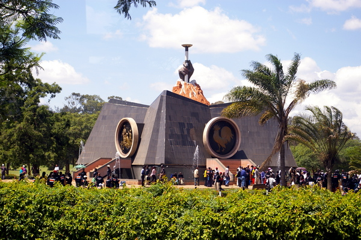
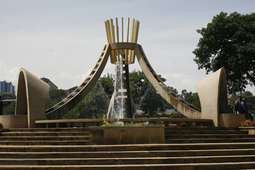
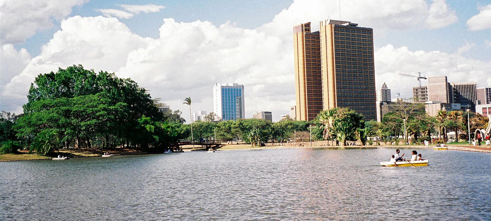
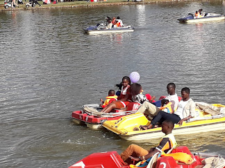
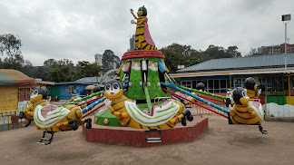

UHURU PARK RECREATIONAL
ABOUT US
Uhuru Park is a 12.9-hectare recreational park in Nairobi, Kenya, adjacent to the city's central business district. On May 23, 1969, the late Mzee Jomo Kenyatta opened it to the public. It includes an artificial lake, several national monuments, and an assembly ground that has become a popular weekend skateboarding spot as well as a venue for local skateboarding competitions, catering to Nairobi's growing skate scene. Aside from skateboarding, the assembly ground is occasionally used for political and religious gatherings. It is notorious for being the site where the Moi regime violently dispersed a protest against illegal land grabbing. In 2021, the park was scrutinized for an attempted renovation that included the removal of old trees. The project was halted by a national court.
MISSION
Making world-class recreational opportunities available so that everyone in our community,region and any part of the world can live a healthy and happy life.
VISION
We create experiences that make our community a better place than it was yesterday,where lifelong goals are met and dreams are realized. We will not accept anything less
than excellence in any aspect of our organization. We have the courage to be open and flexible in the face of change.
Whatever role you play, those values are ingrained in our organization, making us a true leader in recreation.
CORE VALUES
JoyExcellence
Professionalism
Commitment
Accountability
Environmental Friendliness & Partnership
Some of the beautiful scenes at Uhuru Pack

Tom Mboya monument

Fountain

Artificial Lake
Some of the recreational activities at Uhuru Park


